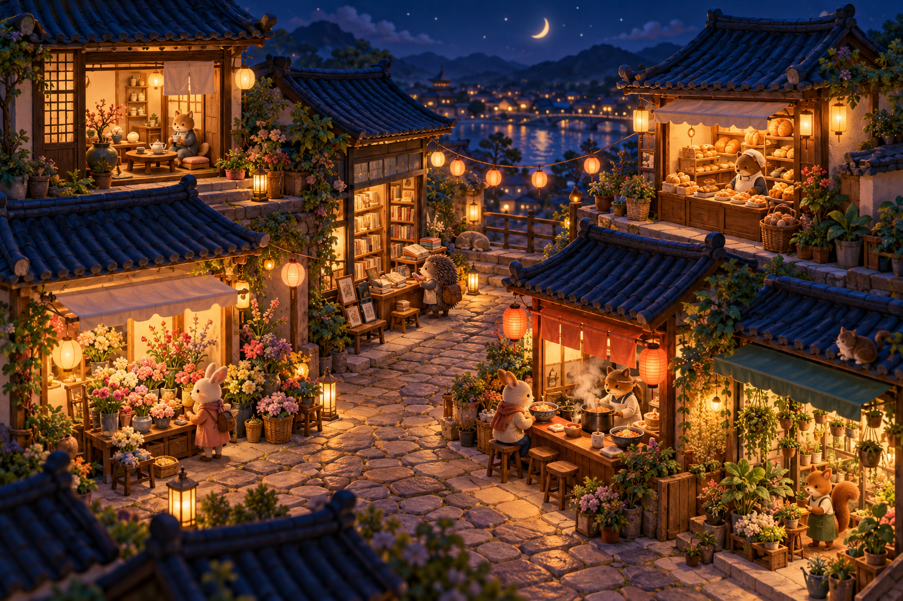

EVERY LITTLE LIGHT 작은 성취의 기록
오늘의 작은 일이
골목의 빛이 됩니다.
조금씩 해낸 일이 모여, 나만의 밤을 환하게 밝힙니다.

ONE MORE LIGHT · 오늘의 골목당신이 움직인 만큼, 이 골목에도 온기가.
오늘, 어떤 불을 켤까요?
5분이면 끝나는 작은 일부터 적어보세요.
1 첫 불빛, 예시부터 골라보세요
예시는 실제 완료로 세지 않아요.
MY LITTLE COLLECTION
영업 일지
나의 작은 선택이 차곡차곡 모이는 곳.
YOUR LITTLE STREET
오늘의 여섯 가게
같은 가게에 여러 일을 완료해도 불은 한 곳에만 켜져요. 오늘의 불빛은 기기 현지 날짜 자정에 새로 시작하며, 지난 기록은 영업 일지에 남아요.
기록은 이 기기의 앱 또는 브라우저에 저장됩니다. 앱 삭제·데이터 초기화 전에 나의 공간에서 JSON 백업을 보관해 주세요.